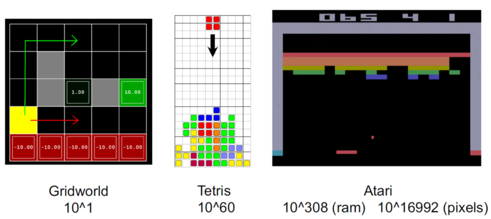
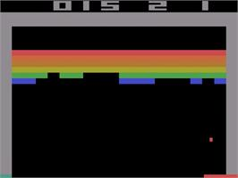
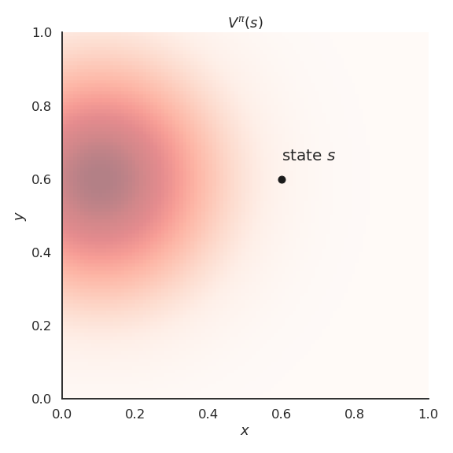
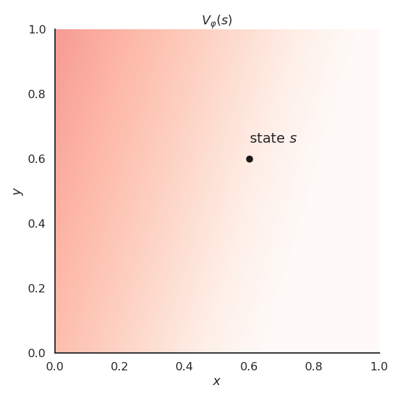
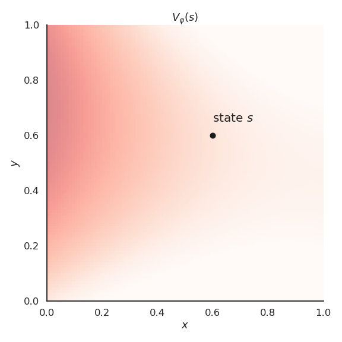
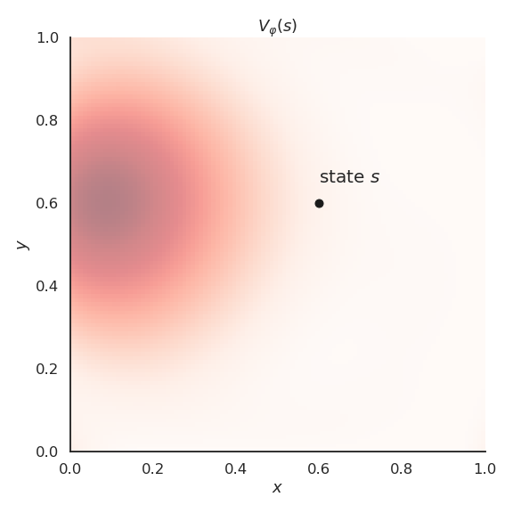
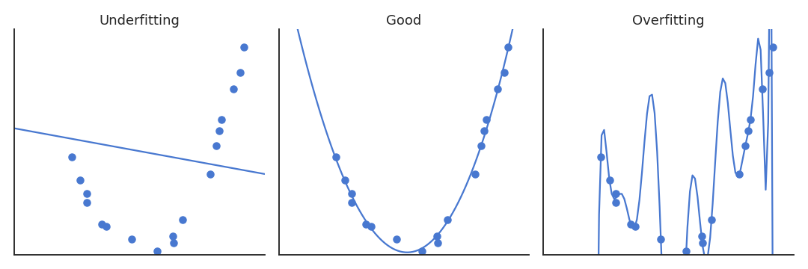
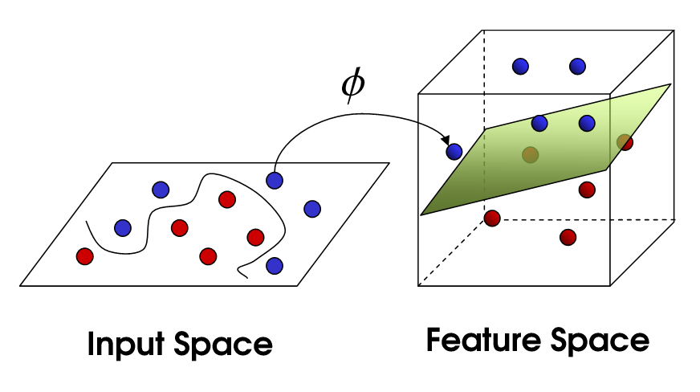

Function Approximation
Value functions approximated by function approximators
1 - Limits of tabular RL
Tabular reinforcement learning
All the methods seen so far belong to tabular RL.
Q-learning necessitates to store in a Q-table one Q-value per state-action pair \((s, a)\).

Tabular reinforcement learning
- If a state has never been visited during learning, the Q-values will still be at their initial value (0.0), no policy can be derived.

- Similar states likely have the same optimal action: we want to be able to generalize the policy between states.
Tabular reinforcement learning
- For most realistic problems, the size of the Q-table becomes quickly untractable.

If you use black-and-white 256x256 images as inputs, you have \(2^{256 * 256} = 10^{19728}\) possible states!
Tabular RL is limited to toy problems.
Tabular RL cannot learn to play video games

Continuous action spaces
Tabular RL only works for small discrete action spaces.
Robots have continuous action spaces, where the actions are changes in joint angles or torques.
A joint angle could take any value in \([0, \pi]\).

Continuous action spaces
- A solution would be to discretize the action space (one action per degree), but we would fall into the curse of dimensionality.

The more degrees of freedom, the more discrete actions, the more entries in the Q-table…
Tabular RL cannot deal with continuous action spaces, unless we approximate the policy with an actor-critic architecture.
2 - Function approximation
Feature vectors

Let’s represent a state \(s\) by a vector of \(d\) features \(\phi(s) = [\phi_1(s), \phi_2(s), \ldots, \phi_d(s)]^T\).
For the cartpole, the feature vector would be:
\[ \phi(s) = \begin{bmatrix}x \\ \dot{x} \\ \theta \\ \dot{\theta} \end{bmatrix}\]
\(x\) is the position, \(\theta\) the angle, \(\dot{x}\) and \(\dot{\theta}\) their derivatives.
We are able to represent any state \(s\) using these four variables.
Feature vectors
- For more complex problems, the feature vector should include all the necessary information (Markov property).

\[ \phi(s) = \begin{bmatrix} x \, \text{position of the paddle} \\ x \, \text{position of the ball} \\ y \, \text{position of the ball} \\ x \, \text{speed of the ball} \\ y \, \text{speed of the position} \\ \text{presence of brick 1} \\ \text{presence of brick 2} \\ \vdots \\ \end{bmatrix} \]
- In deep RL, we will learn these feature vectors, but let’s suppose for now that we have them.
Feature vectors
- Note that we can always fall back to the tabular case using one-hot encoding of the states:
\[ \phi(s_1) = \begin{bmatrix}1\\0\\0\\ \ldots\\ 0\end{bmatrix} \qquad \phi(s_2) = \begin{bmatrix}0\\1\\0\\ \ldots\\ 0\end{bmatrix}\qquad \phi(s_3) = \begin{bmatrix}0\\0\\1\\ \ldots\\ 0\end{bmatrix} \qquad \ldots \]
- But the idea is that we can represent states with much less values than the number of states:
\[d \ll |\mathcal{S}|\]
- We can also represent continuous state spaces with feature vectors.
State value approximation
- In state value approximation, we want to approximate the state value function \(V^\pi(s)\) with a parameterized function \(V_\varphi(s)\):
\[V_\varphi(s) \approx V^\pi(s)\]

- The parameterized function can have any form. Its has a set of parameters \(\varphi\) used to transform the feature vector \(\phi(s)\) into an approximated value \(V_\varphi(s)\).
Linear approximation of state value functions
- The simplest function approximator (FA) is the linear approximator.

- The approximated value is a linear combination of the features:
\[V_\varphi(s) = \sum_{i=1}^d w_i \, \phi_i(s) = \mathbf{w}^T \times \phi(s)\]
The weight vector \(\mathbf{w} = [w_1, w_2, \ldots, w_d]^T\)is the set of parameters \(\varphi\) of the function.
A linear approximator is a single artificial neuron (linear regression) without a bias.
Learning the state value approximation
Regardless the form of the function approximator, we want to find the parameters \(\varphi\) making the approximated values \(V_\varphi(s)\) as close as possible from the true values \(V^\pi(s)\) for all states \(s\).
- This is a regression problem.
- We want to minimize the mean square error between the two quantities:
\[ \min_\varphi \mathcal{L}(\varphi) = \mathbb{E}_{s \in \mathcal{S}} [ (V^\pi(s) - V_\varphi(s))^2]\]
- The loss function \(\mathcal{L}(\varphi)\) is minimal when the predicted values are close to the true ones on average for all states.
Learning the state value approximation
- Let’s suppose that we know the true state values \(V^\pi(s)\) for all states and that the parameterized function is differentiable.
- We can find the minimum of the loss function by applying gradient descent (GD) iteratively:
\[ \Delta \varphi = - \eta \, \nabla_\varphi \mathcal{L}(\varphi) \]
- \(\nabla_\varphi \mathcal{L}(\varphi)\) is the gradient of the loss function w.r.t to the parameters \(\varphi\).
\[ \nabla_\varphi \mathcal{L}(\varphi) = \begin{bmatrix} \dfrac{\partial \mathcal{L}(\varphi)}{\partial \varphi_1} \\ \dfrac{\partial \mathcal{L}(\varphi)}{\partial \varphi_2} \\ \ldots \\ \dfrac{\partial \mathcal{L}(\varphi)}{\partial \varphi_K} \\ \end{bmatrix} \]
- When applied repeatedly, GD converges to a local minimum of the loss function.
Learning the state value approximation
- To minimize the mean square error,
\[ \min_\varphi \mathcal{L}(\varphi) = \mathbb{E}_{s \in \mathcal{S}} [ (V^\pi(s) - V_\varphi(s))^2]\]
we will iteratively modify the parameters \(\varphi\) according to:
\[ \begin{aligned} \Delta \varphi = \varphi_{k+1} - \varphi_n & = - \eta \, \nabla_\varphi \mathcal{L}(\varphi) = - \eta \, \nabla_\varphi \mathbb{E}_{s \in \mathcal{S}} [ (V^\pi(s) - V_\varphi(s))^2] \\ &\\ & = \mathbb{E}_{s \in \mathcal{S}} [- \eta \, \nabla_\varphi (V^\pi(s) - V_\varphi(s))^2] \\ &\\ & = \mathbb{E}_{s \in \mathcal{S}} [\eta \, (V^\pi(s) - V_\varphi(s)) \, \nabla_\varphi V_\varphi(s)] \\ \end{aligned} \]
- As it would be too slow to compute the expectation on the whole state space (batch algorithm), we will sample the quantity:
\[\delta_\varphi = \eta \, (V^\pi(s) - V_\varphi(s)) \, \nabla_\varphi V_\varphi(s)\]
and update the parameters with stochastic gradient descent (SGD).
Learning the state value approximation
- Gradient of the mse:
\[ \Delta \varphi = \mathbb{E}_{s \in \mathcal{S}} [\eta \, (V^\pi(s) - V_\varphi(s)) \, \nabla_\varphi V_\varphi(s)] \]
- If we sample \(K\) states \(s_i\) from the state space:
\[ \Delta \varphi = \eta \, \frac{1}{K} \sum_{k=1}^K (V^\pi(s_k) - V_\varphi(s_k)) \, \nabla_\varphi V_\varphi(s_k) \]
- We can also sample a single state \(s\) (online algorithm):
\[ \Delta \varphi = \eta \, (V^\pi(s) - V_\varphi(s)) \, \nabla_\varphi V_\varphi(s) \]
- Unless stated otherwise, we will sample single states in this section, but the parameter updates will be noisy (high variance).
Linear approximation
- The approximated value is a linear combination of the features:
\[V_\varphi(s) = \sum_{i=1}^d w_i \, \phi_i(s) = \mathbf{w}^T \times \phi(s)\]
- The weights are updated using stochastic gradient descent:
\[ \Delta \mathbf{w} = \eta \, (V^\pi(s) - V_\varphi(s)) \, \phi(s) \]
- This is the delta learning rule of linear regression and classification, with \(\phi(s)\) being the input vector and \(V^\pi(s) - V_\varphi(s)\) the prediction error.
Function approximation with sampling
- The rule can be used with any function approximator, we only need to be able to differentiate it:
\[ \Delta \varphi = \eta \, (V^\pi(s) - V_\varphi(s)) \, \nabla_\varphi V_\varphi(s) \]
The problem is that we do not know \(V^\pi(s)\), as it is what we are trying to estimate.
We can replace \(V^\pi(s)\) by a sampled estimate using Monte Carlo or TD:
- Monte Carlo function approximation:
\[ \Delta \varphi = \eta \, (R_t - V_\varphi(s)) \, \nabla_\varphi V_\varphi(s) \]
- Temporal Difference function approximation:
\[ \Delta \varphi = \eta \, (r_{t+1} + \gamma \, V_\varphi(s') - V_\varphi(s)) \, \nabla_\varphi V_\varphi(s) \]
Note that for Temporal Difference, we actually want to minimize the TD reward-prediction error for all states, i.e. the surprise:
\[\mathcal{L}(\varphi) = \mathbb{E}_{s \in \mathcal{S}} [ (r_{t+1} + \gamma \, V_\varphi(s') - V_\varphi(s))^2]= \mathbb{E}_{s \in \mathcal{S}} [ \delta_t^2]\]
Gradient Monte Carlo Algorithm for value estimation
Algorithm:
Initialize the parameter \(\varphi\) to 0 or randomly.
while not converged:
- Generate an episode according to the current policy \(\pi\) until a terminal state \(s_T\) is reached.
\[ \tau = (s_o, a_o, r_ 1, s_1, a_1, \ldots, s_T) \]
For all encountered states \(s_0, s_1, \ldots, s_{T-1}\):
Compute the return \(R_t = \sum_k \gamma^k r_{t+k+1}\) .
Update the parameters using function approximation:
\[ \Delta \varphi = \eta \, (R_t - V_\varphi(s_t)) \, \nabla_\varphi V_\varphi(s_t) \]
Gradient Monte Carlo has no bias (real returns) but a high variance.
Semi-gradient Temporal Difference Algorithm for value estimation
Algorithm:
Initialize the parameter \(\varphi\) to 0 or randomly.
while not converged:
Start from an initial state \(s_0\).
foreach step \(t\) of the episode:
Select \(a_t\) using the current policy \(\pi\) in state \(s_t\).
Observe \(r_{t+1}\) and \(s_{t+1}\).
Update the parameters using function approximation:
\[ \Delta \varphi = \eta \, (r_{t+1} + \gamma \, V_\varphi(s_{t+1}) - V_\varphi(s_t)) \, \nabla_\varphi V_\varphi(s_t) \]
- if \(s_{t+1}\) is terminal: break
Semi-gradient TD has less variance, but a significant bias as \(V_\varphi(s_{t+1})\) is initially wrong. You can never trust these estimates completely.
Function approximation for Q-values
Q-values can be approximated by a parameterized function \(Q_\theta(s, a)\) in the same manner.
There are basically two options for the structure of the function approximator:
- The FA takes a feature vector for both the state \(s\) and the action \(a\) (which can be continuous) as inputs, and outputs a single Q-value \(Q_\theta(s ,a)\).

- The FA takes a feature vector for the state \(s\) as input, and outputs one Q-value \(Q_\theta(s ,a)\) per possible action (the action space must be discrete).

- In both cases, we minimize the mse between the true value \(Q^\pi(s, a)\) and the approximated value \(Q_\theta(s, a)\).
Q-learning with function approximation
Initialize the parameters \(\theta\).
while True:
Start from an initial state \(s_0\).
foreach step \(t\) of the episode:
Select \(a_{t}\) using the behavior policy \(b\) (e.g. derived from \(\pi\)).
Take \(a_t\), observe \(r_{t+1}\) and \(s_{t+1}\).
Update the parameters \(\theta\):
\[\Delta \theta = \eta \, (r_{t+1} + \gamma \, \max_a Q_\theta(s_{t+1}, a) - Q_\theta(s_t, a_t)) \, \nabla_\theta Q_\theta(s_t, a_t)\]
- Improve greedily the learned policy:
\[\pi(s_t, a) = \text{Greedy}(Q_\theta(s_t, a))\]
- if \(s_{t+1}\) is terminal: break
3 - Feature construction
Feature construction
- Before we dive into deep RL (i.e. RL with non-linear FA), let’s see how we can design good feature vectors for linear function approximation.

The problem with deep NN is that they need a lot of samples to converge, what worsens the fundamental problem of RL: sample efficiency.
By engineering the right features, we could use linear approximators, which converge much faster.
The convergence of linear FA is guaranteed, not (always) non-linear ones.
Why do we need to choose features?
- For the cartpole, the feature vector \(\phi(s)\) could be:
\[ \phi(s) = \begin{bmatrix}x \\ \dot{x} \\ \theta \\ \dot{\theta} \end{bmatrix}\]
\(x\) is the position, \(\theta\) the angle, \(\dot{x}\) and \(\dot{\theta}\) their derivatives.
Can we predict the value of a state linearly?
\[V_\varphi(s) = \sum_{i=1}^d w_i \, \phi_i(s) = \mathbf{w}^T \times \phi(s)\]
No, a high angular velocity \(\dot{\theta}\) is good when the pole is horizontal (going up) but bad if the pole is vertical (will not stop).
The value would depend linearly on something like \(\dot{\theta} \, \sin \theta\), which is a non-linear combination of features.
Feature coding
Let’s suppose we have a simple problem where the state \(s\) is represented by two continuous variables \(x\) and \(y\).
The true value function \(V^\pi(s)\) is a non-linear function of \(x\) and \(y\).

Linear approximation
If we apply linear FA directly on the feature vector \([x, y]\), we catch the tendency of \(V^\pi(s)\) but we make a lot of bad predictions:
- high bias (underfitting).

Polynomial features
To introduce non-linear relationships between continuous variables, a simple method is to construct the feature with polynomials of the variables.
Example with polynomials of order 2:
\[ \phi(s) = \begin{bmatrix}1 & x & y & x\, y & x^2 & y^2 \end{bmatrix}^T \]
We transform the two input variables \(x\) and \(y\) into a vector with 6 elements. The 1 (order 0) is there to learn the offset.
Example with polynomials of order 3:
\[ \phi(s) = \begin{bmatrix}1 & x & y & x\, y & x^2 & y^2 & x^2 \, y & x \, y^2 & x^3 & y^3\end{bmatrix}^T \]
- And so on. We then just need to apply linear FA on these feature vectors (polynomial regression).
\[ V_\varphi(s) = w_0 + w_1 \, x + w_2 \, y + w_3 \, x \, y + w_4 \, x^2 + w_5 \, y^2 + \ldots \]
Polynomials
- Polynomials of order 2 already allow to get a better approximation.

Polynomials
- Polynomials of order 6 are an even better fit for our problem.

Polynomials
The higher the degree of the polynomial, the better the fit, but the number of features grows exponentially.
Computational complexity.
Overfitting: if we only sample some states, high-order polynomials will not interpolate correctly.

Feature spaces
In machine learning (ML), the oldest trick in the book is the use of a feature space allowing to project data into a higher-dimensional and non-linear space, so that the problem becomes linearly separable / predictable.
We can do the same in RL, using any kind of feature extraction methods:

Polynomial features
Gaussian (RBF) features
Fourier transforms
Tile coding
Deep neural networks
- If the right features heve been extracted, linear methods can be applied.
Summary of function approximation
In FA, we project the state information into a feature space to get a better representation.
We then apply a linear approximation algorithm to estimate the value function:
\[V_\varphi(s) = \mathbf{w}^T \, \phi(s)\]
- The linear FA is trained using some variant of gradient decent:
\[\Delta \mathbf{w} = \eta \, (V^\pi(s) - V_\varphi(s)) \, \phi(s)\]
Deep neural networks are the most powerful function approximators in supervised learning.
Do they also work with RL?